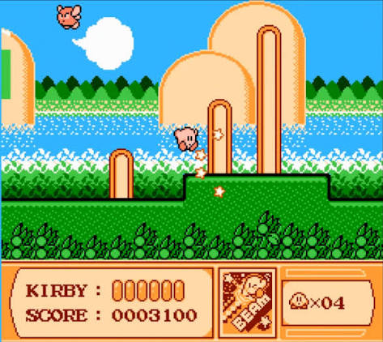

Gameplay programming · C++
Kirby's Adventure
A C++ exam project from the second semester at Howest DAE. We had to recreate one level of Kirby's Adventure as closely as possible in a custom C++ school engine.

- Focus
- Gameplay
- Language
- C++
- Game
- Kirby's Adventure
- Level
- Vegetable Valley
About the project
The goal of this exam project was to recreate Vegetable Valley as faithfully as possible in our school's C++ engine. Besides the gameplay itself, I focused on keeping the code clean and easy to extend.
What I built
- Basic movement and jumping
- Inhaling and floating
- Firing projectiles and enemy interactions
- HUD layout and health
- Camera logic and level flow
- Sound integration
- Enemy types: Bronto Burt, Poppy Bros. Jr., Waddle Dee, Waddle Doo and Sparky
- Miniboss: Mr. Frosty
Why I chose it
I played this game a lot when I was younger and I still have the NES at home, so I could test a lot and build the features more accurately.
Code structure
In this C++ project I split the code into small, reusable parts. Kirby's input and movement are handled by separate components that I attach to him, and the bullets get their behaviour the same way. The enemies share a common base class, and each enemy type only adds what makes it different. It was one of my first C++ games, and it gave me the object-oriented basics I now use in my engine and gameplay work.